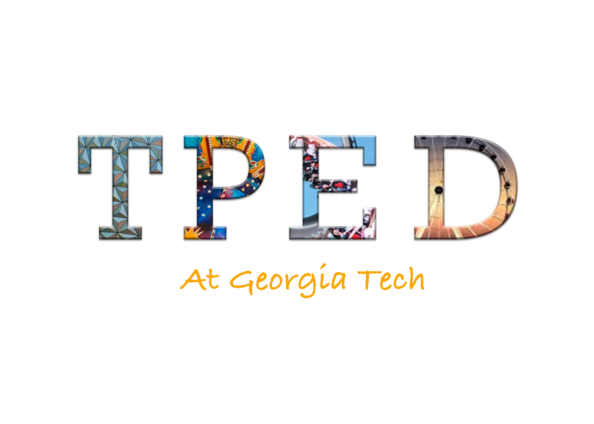
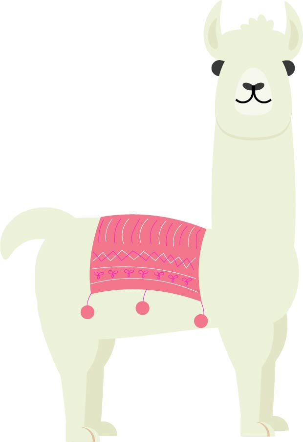

Illustrations
A logo I designed for my brother's wedding
Another logo for the Theme Park Engineering and Design club here at Georgia Tech
 I have also created and designed an original board game called Without a Trace.
It is a horror-style game where all of the players collectively make decisions and strategize to get out of the "house" without being landed on by one player who is playing as the ghost.
Official photos will be available by September 15.